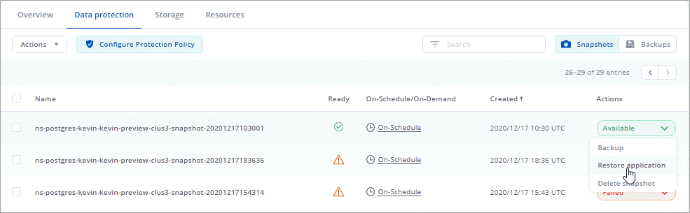

版本資訊
版本資訊
Astra Control Service 的新功能
 建議變更
建議變更
NetApp會定期更新Astra Control Service、為您提供新功能、增強功能和錯誤修復。
2024 年 3 月 14 日
這是次要的錯誤修正版本。
2023 年 11 月 7 日
-
* 使用 ONTAP NAS 經濟型驅動程式備份儲存後端 * 為應用程式提供備份與還原功能：為啟用備份與還原作業
ontap-nas-economy有些 "簡單步驟"。 -
* Astra Control Service 支援內部部署 Red Hat OpenShift Container Platform 叢集 *
-
* 不可變備份 * ： Astra Control 現在支援 "不可更改的唯讀備份" 成為可抵禦惡意軟體和其他威脅的額外安全層。
-
* Astra Control Provisioner 簡介 *
在 23.10 版本中、 Astra Control 引進了一種稱為 Astra Control Provisioner 的新軟體元件、可供所有獲授權的 Astra Control 使用者使用。Astra Control Provisioner 可存取 Astra Trident 所提供的進階管理和儲存資源配置功能。所有 Astra Control 客戶均可免費使用這些功能。
-
* 開始使用 Astra Control Provisioner*
您可以 "啟用 Astra Control Provisioner" 如果您已安裝並設定環境以使用 Astra Trident 23.10 。 -
* Astra Control Provisioner 功能 *
Astra Control Provisioner 23.10 版本提供下列功能：
-
* 使用 Kerberos 5 加密技術增強儲存後端安全性 * ：您可以藉由改善儲存安全性 "啟用加密" 用於託管叢集與儲存後端之間的流量。Astra Control Provisioner 支援透過 NFSv4.1 連線、從 Red Hat OpenShift 叢集到 Azure NetApp Files 和內部部署 ONTAP 磁碟區的 Kerberos 5 加密。
-
* 使用 SnapShot 恢復資料 * ： Astra Control Provisioner 使用從快照提供快速的原位磁碟區還原
TridentActionSnapshotRestore（ TASR ） CR 。 -
* 應用程式的備份與還原功能
ontap-nas-economy驅動程式備份儲存後端 * ：如所述 以上。
-
-
-
* Astra Control Service 支援 AWS （ ROSA ）叢集上的 Red Hat OpenShift 服務 *
-
* 支援管理使用 NVMe / TCP 儲存設備的應用程式 *
Astra Control 現在可以管理以 NVMe / TCP 連線的持續磁碟區為後盾的應用程式。 -
* 依預設關閉執行攔截器 * ：從本版本開始、執行攔截器功能就可以 "已啟用" 或停用以提高安全性（預設為停用）。如果您尚未建立用於 Astra Control 的執行攔截器、則需要 "啟用執行攔截功能" 開始建立攔截器。如果您在此版本之前建立了執行攔截器、則執行攔截器功能會保持啟用狀態、您可以像平常一樣使用攔截器。
2023 年 10 月 2 日
這是次要的錯誤修正版本。
2023 年 7 月 27 日
-
Clone 作業現在僅支援即時複製（託管應用程式的目前狀態）。若要從快照或備份複製、請使用還原工作流程。
2023 年 6 月 26 日
-
Azure Marketplace 訂閱現在以每小時計費、而非每分鐘計費
2023 年 5 月 30 日
-
支援私有 Amazon EKS 叢集
-
支援在還原或複製作業期間選取目的地儲存類別
2023 年 5 月 15 日
這是次要的錯誤修正版本。
2023 年 4 月 25 日
-
支援私有 Red Hat OpenShift 叢集
-
支援在還原作業期間包含或排除應用程式資源
-
支援管理純資料應用程式
2023年1月17日
-
更強大的執行掛勾功能、提供更多篩選選項
-
支援NetApp Cloud Volumes ONTAP 功能作為儲存後端
2022年11月22日
-
支援橫跨多個命名空間的應用程式
-
支援將叢集資源納入應用程式定義
-
增強備份、還原及複製作業的進度報告功能
-
支援管理已安裝相容版本Astra Trident的叢集
-
支援在單一Astra Control Service帳戶中管理多個雲端供應商訂閱
-
支援將公有雲環境中的自我管理Kubernetes叢集新增至Astra Control Service
-
Astra Control Service的帳單現在會依命名空間進行計量、而非依應用程式進行計費
-
支援透過AWS Marketplace訂閱Astra Control Service定期方案
2022年9月7日
此版本包含Astra Control Service基礎架構的穩定性和恢復能力增強功能。
2022年8月10日
此版本包含下列新功能與增強功能。
-
改善的應用程式管理工作流程改善的應用程式管理工作流程、可在定義由Astra Control管理的應用程式時提供更高的靈活度。
-
除了快照前及快照後執行掛勾之外、您現在還可以設定下列類型的執行掛勾：
-
預先備份
-
備份後
-
還原後
Astra Control現在支援使用相同的指令碼來處理多個執行掛勾、這是其他改善項目之一。

NetApp針對特定應用程式提供的預設快照前及後執行掛勾已在此版本中移除。如果您沒有提供自己的快照執行掛勾、Astra Control Service只會從2022年8月4日開始、擷取損毀一致的快照。請造訪 "NetApp Verda GitHub儲存庫" 以取得執行攔截指令碼的範例、您可以根據環境進行修改。
-
-
在閱讀Astra Control Service文件時、您可以選擇雲端供應商、現在您可以在頁面右上角選擇雲端供應商。您將會看到僅與所選雲端供應商相關的文件。

2022年4月26日
此版本包含下列新功能與增強功能。
-
命名空間角色型存取控制（RBAC）Astra Control Service現在支援指派命名空間限制給成員或檢視器使用者。
-
從Astra Control移除鏟斗現在您可以從Astra Control Service移除鏟斗。
2021年12月14日
此版本包含下列新功能與增強功能。
-
新的儲存後端選項
-
就地應用程式還原您現在可以還原至相同的叢集和命名空間、還原已備份的應用程式快照、複製或備份。
-
指令碼事件搭配執行掛勾Astra Control、可支援自訂指令碼、以便在擷取應用程式快照之前或之後執行。這可讓您執行暫停資料庫交易等工作、使資料庫應用程式的快照保持一致。
-
由營運者部署的應用程式Astra Control可支援與營運者一起部署的部分應用程式。
2021年8月5日
此版本包含下列新功能與增強功能。
-
Astra Control Center Astra Control現已推出全新部署模式。_Astra Control Center_是您在資料中心安裝及操作的自我管理軟體、可讓您管理內部部署Kubernetes叢集的Kubernetes應用程式生命週期管理。
若要深入瞭解、 "前往Astra Control Center文件"。
-
現在您可以利用自己的儲存庫來管理Astra用於備份和複製的儲存庫、方法是新增其他儲存庫、並變更雲端供應商中Kubernetes叢集的預設儲存庫。
2021年6月2日
此版本包含錯誤修正、以及Google Cloud支援的下列增強功能。
-
支援共享的VPC您現在可以使用共享的VPC網路組態、在GCP專案中管理GKE叢集。
-
在使用CVS服務類型時、CVS服務類型Astra Control Service的持續磁碟區大小現在會建立最小大小為300 GiB的持續磁碟區。
-
GKE工作節點現在支援Container Optimized OS Container Optimized OS。這是支援Ubuntu的附加功能。
2021年4月15日
此版本包含下列新功能與增強功能。
-
REST API Astra Control REST API現已可供使用。API以現代技術和目前最佳實務做法為基礎。
-
年度訂閱Astra Control Service現在提供_Premium訂購_。
以折扣價預先付款、每年訂閱一次、可讓您管理每個應用程式套件最多10個應用程式。請聯絡NetApp銷售人員、視組織需求購買任意數量的套件、例如購買3個套件、即可從Astra Control Service管理30個應用程式。
如果您管理的應用程式數量超過年度訂閱所允許的數量、則每個應用程式的超額使用率將高達每分鐘$0.005（與Premium PayGo相同）。
-
命名空間與應用程式視覺化我們增強了「探索到的應用程式」頁面、以更清楚地顯示命名空間與應用程式之間的階層關係。只要擴充命名空間即可查看該命名空間中所含的應用程式。

-
使用者介面增強功能資料保護精靈已經過強化、易於使用。例如、我們將「保護原則」精靈精簡、以便在您定義保護排程時、更輕鬆地檢視保護排程。

-
活動強化我們讓您更輕鬆地檢視Astra Control帳戶中活動的詳細資料。
-
依託管應用程式、嚴重性層級、使用者和時間範圍篩選活動清單。
-
將您的Astra Control帳戶活動下載至CSV檔案。
-
選取叢集或應用程式後、直接從「叢集」頁面或「應用程式」頁面檢視活動。
-
2021年3月1日
Astra Control Service現在支援 "_CVS_服務類型" 使用適用於Google Cloud的Cloud Volumes Service除了已支援_CVs-Performance_服務類型之外、提醒您、Astra Control Service使用Cloud Volumes Service 支援Google Cloud的功能、做為持續磁碟區的儲存後端。
這項增強功能表示Astra Control Service現在可以管理在_any中執行之Kubernetes叢集的應用程式資料 "支援支援的Google Cloud地區Cloud Volumes Service"。
如果您可以在Google Cloud區域之間靈活選擇、您可以根據效能需求選擇CVS或CVS效能。 "深入瞭解如何選擇服務類型"。
2021年1月25日
我們很高興宣布Astra Control Service現在已全面推出。我們採納了許多從試用版獲得的意見反應、並做了一些其他值得注意的增強功能。
-
現在可以使用帳單、讓您從免費方案移至優質方案。 "深入瞭解帳單"。
-
Astra Control Service現在使用CVS效能服務類型時、會建立最小大小為100 GiB的持續磁碟區。
-
Astra Control Service現在可以更快探索應用程式。
-
您現在可以自行建立及刪除帳戶。
-
Astra Control Service無法再存取Kubernetes叢集時、我們已改善通知功能。
這些通知非常重要、因為Astra Control Service無法管理已中斷連線叢集的應用程式。
2020年12月17日（試用版更新）
我們主要著重於修正錯誤、以改善您的使用體驗、但我們也做了一些其他值得注意的增強功能：
-
當您將第一個Kubernetes運算新增至Astra Control Service時、物件存放區現在會建立在叢集所在的地理區中。
-
當您在運算層級檢視儲存詳細資料時、現在可以取得持續磁碟區的詳細資料。

-
我們新增了從現有快照或備份還原應用程式的選項。

-
如果刪除Astra Control Service正在管理的Kubernetes叢集、叢集現在會顯示*移除*狀態。然後您可以從Astra Control Service移除叢集。
-
帳戶擁有者現在可以修改指派給其他使用者的角色。
-
我們新增了一節計費、將在Astra Control Service推出以供一般使用（GA）時啟用。